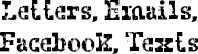

December 18
Dear Mr. Tushman,
I am very, very sorry for punching Julian. It was very, very wrong for me to do that. I am writing a letter to him to tell him that, too. If it’s okay, I would really rather not tell you why I did what I did because it doesn’t really make it right anyway. Also, I would rather not make Julian get in trouble for having said something he should not have said.
Very sincerely,
Jack Will
December 18
Dear Julian,
I am very, very, very sorry for hitting you. It was wrong of me. I hope you are okay. I hope your grown-up tooth grows in fast. Mine always do.
Sincerely,
Jack Will
December 26
Dear Jack,
Thank you so much for your letter. One thing I’ve learned after being a middle-school director for twenty years: there are almost always more than two sides to every story. Although I don’t know the details, I have an inkling about what may have sparked the confrontation with Julian.
While nothing justifies striking another student—ever—I also know good friends are sometimes worth defending. This has been a tough year for a lot of students, as the first year of middle school usually is.
Keep up the good work, and keep being the fine boy we all know you are.
All the best,
Lawrence Tushman
Middle-School Director
To: ltushman@beecherschool.edu
Cc: johnwill@phillipsacademy.edu; amandawill@copperbeech.org
Fr: melissa.albans@rmail.com
Subject: Jack Will
Dear Mr. Tushman,
I spoke with Amanda and John Will yesterday, and they expressed their regret at Jack’s having punched our son, Julian, in the mouth. I am writing to let you know that my husband and I support your decision to allow Jack to return to Beecher Prep after a two-day suspension. Although I think hitting a child would be valid grounds for expulsion in other schools, I agree such extreme measures aren’t warranted here. We have known the Will family since our boys were in kindergarten, and are confident that every measure will be taken to ensure this doesn’t happen again.
To that end, I wonder if Jack’s unexpectedly violent behavior might have been a result of too much pressure being placed on his young shoulders? I am speaking specifically of the new child with special needs who both Jack and Julian were asked to “befriend.” In retrospect, and having now seen the child in question at various school functions and in the class pictures, I think it may have been too much to ask of our children to be able to process all that. Certainly, when Julian mentioned he was having a hard time befriending the boy, we told him he was “off the hook” in that regard. We think the transition to middle school is hard enough without having to place greater burdens or hardships on these young, impressionable minds. I should also mention that, as a member of the school board, I was a little disturbed that more consideration was not given during this child’s application process to the fact that Beecher Prep is not an inclusion school. There are many parents—myself included—who question the decision to let this child into our school at all. At the very least, I am somewhat troubled that this child was not held to the same stringent application standards (i.e. interview) that the rest of the incoming middle-school students were.
Best,
Melissa Perper Albans
To: melissa.albans@rmail.com
Fr: ltushman@beecherschool.edu
Cc: johnwill@phillipsacademy.edu; amandawill@copperbeech.org
Subject: Jack Will
Dear Mrs. Albans,
Thanks for your email outlining your concerns. Were I not convinced that Jack Will is extremely sorry for his actions, and were I not confident that he would not repeat those actions, rest assured that I would not be allowing him back to Beecher Prep.
As for your other concerns regarding our new student August, please note that he does not have special needs. He is neither disabled, handicapped, nor developmentally delayed in any way, so there was no reason to assume anyone would take issue with his admittance to Beecher Prep—whether it is an inclusion school or not. In terms of the application process, the admissions director and I both felt it within our right to hold the interview off-site at August’s home for reasons that are obvious. We felt that this slight break in protocol was warranted but in no way prejudicial—in one way or another—to the application review. August is an extremely good student, and has secured the friendship of some truly exceptional young people, including Jack Will.
At the beginning of the school year, when I enlisted certain children to be a “welcoming committee” to August, I did so as a way of easing his transition into a school environment. I did not think asking these children to be especially kind to a new student would place any extra “burdens or hardships” on them. In fact, I thought it would teach them a thing or two about empathy, and friendship, and loyalty.
As it turns out, Jack Will didn’t need to learn any of these virtues—he already had them in abundance.
Thank you again for being in touch.
Sincerely,
Lawrence Tushman
To: melissa.albans@rmail.com
Fr: johnwill@phillipsacademy.edu
Cc: ltushman@beecherschool.edu; amandawill@copperbeech.org
Subject: Jack
Hi Melissa,
Thank you for being so understanding about this incident with Jack. He is, as you know, extremely sorry for his actions. I hope you do accept our offer to pay Julian’s dental bills.
We are very touched by your concern regarding Jack’s friendship with August. Please know we have asked Jack if he felt any undue pressure about any of this, and the answer was a resolute “no.” He enjoys August’s company and feels like he has made a good friend.
Hope you have a
Happy New Year!
John and Amanda Will
Hi August,
Jacklope Will wants to be friends with you on Facebook.
Jackalope Will
32 mutual friends
Thanks,
The Facebook Team
To: auggiedoggiepullman@email.com
Subject: Sorry ! ! ! ! ! !
Message:
Hey august. Its me Jack Will. I noticed im not on ur friends list anymore. Hope u friend me agen cuz im really sorry. I jus wanted 2 say that. Sorry. I know why ur mad at me now Im sorry I didn’t mean the stuff I said. I was so stupid. I hope u can 4give me
Hope we can b friends agen.
Jack
1 New Text Message
From: AUGUST
Dec 31 4:47PM
got ur message u know why im mad at u now?? did Summer tell u?
1 New Text Message
From: JACKWILL
Dec 31 4:49PM
She told me bleeding scream as hint but didn’t get it at first then I remember seeing bleeding scream in homeroom on Hallween. didn’t know it was you thought u were coming as Boba Fett.
1 New Text Message
From: AUGUST
Dec 31 4:51PM
I changed my mind at the last minute. Did u really punch Julian?
1 New Text Message
From: JACKWILL
Dec 31 4:54PM
Yeah i punchd him knocked out a tooth in the back. A baby tooth.
1 New Text Message
From: AUGUST
Dec 31 4:55PM
whyd u punch him????????
1 New Text Message
From: JACKWILL
Dec 31 4:56PM
I dunno
1 New Text Message
From: AUGUST
Dec 31 4:58PM
liar. I bet he said something about me right?
1 New Text Message
From: JACKWILL
Dec 31 5:02PM
he’s a jerk. but I was a jerk too. really really really sorry for wat I said dude, Ok? can we b frenz agen?
1 New Text Message
From: AUGUST
Dec 31 5:03PM
ok
1 New Text Message
From: JACKWILL
Dec 31 5:04PM
awsum!!!!
1 New Text Message
From: AUGUST
Dec 31 5:06PM
but tell me the truth, ok?
wud u really wan to kill urself if u wer me???
1 New Text Message
From: JACKWILL
Dec 31 5:08PM
no!!!!!
I swear on my life
but dude-
I would want 2 kill myself if I were Julian ;)
1 New Text Message
From: AUGUST
Dec 31 5:10PM
lol
yes dude we’r frenz agen.